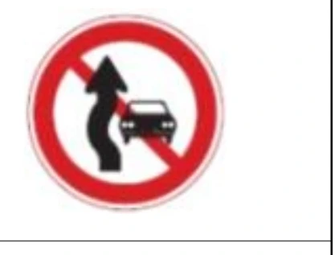

904. Biển báo quy định sau có ý nghĩa gì?

- ①Chú ý khúc cua
- ②Cấm xe ô tô
- ③Cấm vượt
- ④Khu vực có gờ giảm tốc
Xem đáp án
Đáp án
③ Cấm vượt
Căn cứ
Quy tắc thi hành Luật Giao thông đường bộ [Phụ lục 6] Biển báo quy định 217, biển báo cấm vượt, được lắp đặt trước một đoạn hoặc địa điểm trên đường cấm vượt hoặc ở bên phải đường tại điểm cần thiết.
Phần căn cứ là bản dịch máy để tham khảo.